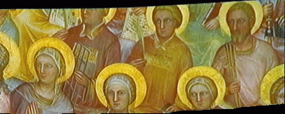

| Francesca Odone and Andrea Fusiello |
|
Heriot-Watt University, Edinburgh - Scotland |
Segmentation of moving objects.
Moving objects are segmented out from the original
sequence by residual motion analysis, after camera motion compensation.
A mosaic video can be constructed by pasting
the moving objects of each original frame onto the mosaic .
Or else a sequence containing the foreground
objects, described in the mosaic reference frame, can be useful to perform
video coding or video editing.
Video Coding
From the video coding point of view, the previously
described technique of building the mosaic of the backgound and the sequence
of foregrounds,
corrensponds to an encoding operation, in the
contest-based coding sense.
The large panoramic mosaic of the background
is sent to the receiver once, together with the sequence of foregrounds.
Since they are described in the same reference
frame, they can be easily pasted together, at the receiver end, to obtain
a video of mosaics.
If one wants to obtain the original sequence,
the homographies between the mosaic (i.e., its reference frame) and all the
image frames have to be sent as well.
By appying a mosaic to frame registration to
every frame of the video of mosaics, the original sequence is obtained.
Video Editing
The segmented representation can be exploited
to insert synthetic objects into the background, such as advertising posters.
First of all a part of the original scene where
we want to ``stick'' the poster has to be chosen. Walls or hedges are suitable.
To slant correctly the sign, the background mosaic
is projected onto the plane of the chosen object (the wall, for instance).
This technique is known as metric rectification.
The insertion of the synthetic sign is done
on the rectified mosaic and the result is warped back with the inverse transformation.
This new synthetic background can be used to
build a new modified sequence, as described above.
| sequence (MPEG, I-frames only) |
mosaic (GIF) |
stabilized sequence | notes |
| Clio | X | X | Camera fixating at the car with oscillations. |
| Facade | X | The effect of radial distorsion is noticeable. | |
| Lab G78 (1) | X | . | |
| Lab G78 (2) | X | ||
| Lab G78 (3) | 1
2 3 |
1: Blending
by averaging 2: For every frame only the new pixel are added 3: The latest image is put onto the mosaic |
| sequence (MPEG, I-frames only) |
mosaic (GIF) |
encoded/decoded
(MPEG, I-frames only) |
video of mosaics (MPEG,I-frames ) |
synthetic advertisement | notes |
| Alberto | X | There are artifacts (on the steps) due to the moving person. | |||
| Francesca | X | X | X | ||
| Manuel | X | X | X | ||
| Super5 | X | X | X | X | metric rectified mosaic |
{kind=link}
{kind=link}
{kind=link}
{kind=link}
{kind=link}
{kind=link}
{kind=link}
{kind=link}
{kind=link}
{kind=link}
{kind=link}
{kind=link}